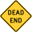

trigger_add_tf_player_condition
Jump to navigation
Jump to search
")
")
| CTriggerAddTFPlayerCondition |
trigger_add_tf_player_condition is a brush entity available in  Team Fortress 2.
Team Fortress 2.
This entity will give a specific condition to players within its volume (same as the addcond command).
Keyvalues
- Name (targetname) <string>
- The name that other entities refer to this entity by, via Inputs/Outputs or other keyvalues (e.g.
parentnameortarget).
Also displayed in Hammer's 2D views and Entity Report. - See also: Generic Keyvalues, Inputs and Outputs available to all entities
Condition:
- Condition (condition) <integer>
- Condition to give to the player.
- Duration (duration) <integer>
- How long the chosen condition lasts. -1 makes it last until it's cleared by other means.
Flags
Outputs
List of Conditions

This article has no links to other VDC articles. Please help improve this article by adding links that are relevant to the context within the existing text.
January 2024
January 2024
| ID | Description | Internal Name |
|---|---|---|
| 0 | Slowed (as in when revving Minigun or zooming in with Sniper Rifles). Places the player in their class's zoomed/revved pose (for classes without this animation, this uses the reference pose). | TF_COND_AIMING |
| 1 | Sniper Rifle zoom/scope. If applied whilst in third person, the player will appear invisible. Upon switching out of a weapon whilst this condition is active when the weapon does not allow zooming, the game will crash. | TF_COND_ZOOMED |
| 2 | Disguise smoke. | TF_COND_DISGUISING |
| 3 | Disguise donning. | TF_COND_DISGUISED |
| 4 | Cloak effect. Applying this effect as Spy initiates cloaking but with no sound (with the selected PDA's deploy animation playing). When applied as a class other than Spy, the player will immediately uncloak with no noise. | TF_COND_STEALTHED |
| 5 | Medi Gun invulnerability effect. Will drop as soon as the user starts to receive continuous healing from a Dispenser, Payload cart or Medic's secondary healing gun. Also drops from a Medic as soon as he activates or comes to the end of his own ÜberCharge. Not affected by a Medic's self-healing. | TF_COND_INVULNERABLE |
| 6 | Teleporter dust. | TF_COND_TELEPORTED |
| 7 | Intended to be taunting. Does nothing via addcond, but can be used with removecond to immediately stop taunting. | TF_COND_TAUNTING |
| 8 | ÜberCharge expiration effect, if the player is ÜberCharged. | TF_COND_INVULNERABLE_WEARINGOFF |
| 9 | Intended to be flickering effect if Cloaked. Removed immediately if added. | TF_COND_STEALTHED_BLINK |
| 10 | Intended to be condition for Teleporting. Prevents you from doing things you normally wouldn't be able to do when teleporting (e.g. picking up The Intelligence). | TF_COND_SELECTED_TO_TELEPORT |
| 11 | Crit boost (Kritzkrieg, Revenge crits). Drops under the same conditions as 5. | TF_COND_CRITBOOSTED |
| 12 | Intended to be a temporary damage buff. Does nothing. | TF_COND_TMPDAMAGEBONUS |
| 13 | Dead Ringer Cloak defense buff, works with any watch as Spy. Will automatically add condition 4. | TF_COND_FEIGN_DEATH |
| 14 | Bonk! Atomic Punch effect. | TF_COND_PHASE |
| 15 | Intended to be the Stunned effect, but simply adds the slowing effect icon in the HUD without any change to movement speed. Can be used with removecond to remove a stun. | TF_COND_STUNNED |
| 16 | Buff Banner effect. | TF_COND_OFFENSEBUFF |
| 17 | Chargin' Targe effect. Will cause any class to begin moving forward with a restricted turn rate as if charging, while emitting the Demoman's charging yell (the Demoman's speed will increase to 750 HU/s, and for Demomen this condition will expire when the charge meter empties). | TF_COND_SHIELD_CHARGE |
| 18 | Intended to be the glowing eye effect associated with the Eyelander's head-taking capability. Can be used with removecond to remove such a glow. | TF_COND_DEMO_BUFF |
| 19 | Crit-a-Cola/Buffalo Steak Sandvich/Cleaner's Carbine effect. | TF_COND_ENERGY_BUFF |
| 20 | Medicating Melody effect (does not heal, only adds rings around the player's feet; the rings are removed after a taunt ends, though the condition persists). | TF_COND_RADIUSHEAL |
| 21 | Intended to be the effect associated with any kind of continuous healing. Can be used with removecond to remove such an effect. | TF_COND_HEALTH_BUFF |
| 22 | Fire Ignite reaction (sound and speech, but no fire). Can be used with removecond to remove afterburn. | TF_COND_BURNING |
| 23 | Intended to indicate Overhealing. Does nothing. | TF_COND_HEALTH_OVERHEALED |
| 24 | Jarate effect. | TF_COND_URINE |
| 25 | Intended to be the Bleeding effect. Can only be used with removecond to remove bleeding. | TF_COND_BLEEDING |
| 26 | Battalion's Backup effect. | TF_COND_DEFENSEBUFF |
| 27 | Mad Milk effect. | TF_COND_MAD_MILK |
| 28 | Quick-Fix visual effects + knock back/movement immunity (no healing). Drops under the same conditions as 5. | TF_COND_MEGAHEAL |
| 29 | Concheror effect. | TF_COND_REGENONDAMAGEBUFF |
| 30 | Fan o' War effect (marked for death). | TF_COND_MARKEDFORDEATH |
| 31 | All attacks are mini-crits (no mini-crit glow occurs, but mini-crit hit sounds and effects occur). Player cannot be healed in any way. | TF_COND_NOHEALINGDAMAGEBUFF |
| 32 | Disciplinary Action effect. | TF_COND_SPEED_BOOST |
| 33 | Halloween pumpkin crit boost. | TF_COND_CRITBOOSTED_PUMPKIN |
| 34 | Power Up Canteen crit boost. Provides critical hits and doubles Sentry Gun firing rate. | TF_COND_CRITBOOSTED_USER_BUFF |
| 35 | Player's weapon gains crit glow and emits crit sound cues as if charging (but does not gain a crit boost). Automatically added by condition 17 when the player's charge meter drops below 75%. | TF_COND_CRITBOOSTED_DEMO_CHARGE |
| 36 | Soda Popper's "Hype" multiple jump. On classes other than Scout, this provides the purple glow effect on weapons, but no additional jumps are granted. | TF_COND_SODAPOPPER_HYPE |
| 37 | First blood crit boost. | TF_COND_CRITBOOSTED_FIRST_BLOOD |
| 38 | Winning team crit boost. | TF_COND_CRITBOOSTED_BONUS_TIME |
| 39 | Intelligence capture crit boost. | TF_COND_CRITBOOSTED_CTF_CAPTURE |
| 40 | Crit boost from crit-on-kill weapons (Killing Gloves of Boxing). | TF_COND_CRITBOOSTED_ON_KILL |
| 41 | Cannot switch away from melee weapon (as for Buffalo Steak Sandvich). | TF_COND_CANNOT_SWITCH_FROM_MELEE |
| 42 | Player takes 35% less damage (50% less from Sentry Guns), gains team-colored buff rings. This is used for the Mann vs. Machine bomb carrier defensive buff. This is similar to condition 26, though without the icon above the health bar in the HUD. | TF_COND_DEFENSEBUFF_NO_CRIT_BLOCK |
| 43 | "Reprogrammed". This condition no longer functions. Previous behavior: swaps the player from BLU to RED for the duration of the condition. Removal of this condition causes the player to swap from RED to BLU. Adds sparks to player's head. Automatically adds condition 15 and slows the player for 5 seconds. | TF_COND_REPROGRAMMED |
| 44 | Mmmph crit boost. | TF_COND_CRITBOOSTED_RAGE_BUFF |
| 45 | Mmmph activation defense buff. | TF_COND_DEFENSEBUFF_HIGH |
| 46 | Focus effect. This affects only Sniper primaries, but not the Classic, the Huntsman or Fortified Compound. All other weapons gain the lightning effects, however. | TF_COND_SNIPERCHARGE_RAGE_BUFF |
| 47 | Causes the Enforcer to lose its 20% damage bonus, as when firing it to remove a disguise. | TF_COND_DISGUISE_WEARINGOFF |
| 48 | Self marked for death (as with Rescue Ranger hauling). | TF_COND_MARKEDFORDEATH_SILENT |
| 49 | Crouching causes the player to appear to be a Dispenser of the enemy team to enemy players. As a side effect, it forces the player's speed to 450 Hammer Units per second (diagonal movement is at 520 HU/s). Swapping weapons while in this state will cause the player to briefly stop moving, and then return to 450 HU/s. This condition also causes Sentry Guns to ignore the player, which was possibly used for a Spy disguise that was later scrapped. | TF_COND_DISGUISED_AS_DISPENSER |
| 50 | Adds a sparking effect to the player's head (associated with sapping a Robot in Mann vs. Machine). | TF_COND_SAPPED |
| 51 | "Hidden" ÜberCharge (player sees their viewmodel as ÜberCharged, but their appearance is not ÜberCharged unless they are hit by a source of damage, after which the player appears ÜberCharged for several seconds. Much like Robots on a Mann vs. Machine wave before entering the arena). | TF_COND_INVULNERABLE_HIDE_UNLESS_DAMAGED |
| 52 | Canteen ÜberCharge. Reduces damage to your Sentry Gun. Also used for Mannpower respawn Über protection. | TF_COND_INVULNERABLE_USER_BUFF |
| 53 | Player is forced into thirdperson and hears the Bombinomicon's lines as if their head were turned into a bomb. If Merasmus is active on the map, a bomb appears on the player's head. This condition may cause users to crash if added on a map other than Ghost Fort. | TF_COND_HALLOWEEN_BOMB_HEAD |
| 54 | Player cannot move and hears the Ghost Fort dancing music. Any taunts performed will be the Thriller taunt. | TF_COND_HALLOWEEN_THRILLER |
| 55 | Automatically adds condition 20 and 21 and causes the player and every nearby teammate to begin gaining health as if being healed by the Amputator. The player gets the credit for any healing that occurs. Conditions 20 and 21 are automatically removed when the player ends any taunt, but condition 55 remains active (though it does nothing after this point). | TF_COND_RADIUSHEAL_ON_DAMAGE |
| 56 | Miscellaneous crit boost. Likely used for the Wheel of Fate Critical Hits effect. | TF_COND_CRITBOOSTED_CARD_EFFECT |
| 57 | Miscellaneous ÜberCharge. Likely used for the Wheel of Fate ÜberCharge effect. | TF_COND_INVULNERABLE_CARD_EFFECT |
| 58 | Vaccinator Über bullet resistance. | TF_COND_MEDIGUN_UBER_BULLET_RESIST |
| 59 | Vaccinator Über blast resistance. | TF_COND_MEDIGUN_UBER_BLAST_RESIST |
| 60 | Vaccinator Über fire resistance. | TF_COND_MEDIGUN_UBER_FIRE_RESIST |
| 61 | Vaccinator passive bullet resistance. | TF_COND_MEDIGUN_SMALL_BULLET_RESIST |
| 62 | Vaccinator passive blast resistance. | TF_COND_MEDIGUN_SMALL_BLAST_RESIST |
| 63 | Vaccinator passive fire resistance. | TF_COND_MEDIGUN_SMALL_FIRE_RESIST |
| 64 | Player will Cloak immediately regardless of class. Used for the Invisibility Magic spell. | TF_COND_STEALTHED_USER_BUFF |
| 65 | Unknown. | TF_COND_MEDIGUN_DEBUFF |
| 66 | Player is ignored by enemy bots and Sentry Guns, and fades to Invisibility. Attacking will make the player visible, but the player will rapidly fade out again, during which the player will be unable to attack. Player gains a shadowed-border "Stealth" overlay. Used when the Invisibility Magic spell is fading. | TF_COND_STEALTHED_USER_BUFF_FADING |
| 67 | Bullet damage immunity. | TF_COND_BULLET_IMMUNE |
| 68 | Blast damage immunity. | TF_COND_BLAST_IMMUNE |
| 69 | Fire damage immunity. | TF_COND_FIRE_IMMUNE |
| 70 | Player will survive all damage until their health reaches 1, after which this condition will be automatically removed. Damage that would be fatal will not show as combat text above the player's head to the attacker. | TF_COND_PREVENT_DEATH |
| 71 | MvM Bot gate-capture stun (automatically stuns bots and adds a radio effect above their heads, but has no effect on human players). | TF_COND_MVM_BOT_STUN_RADIOWAVE |
| 72 | Player gains speed boost, firing rate boost, reload speed boost, and infinite air jumps. Used for the Minify Magic spell. | TF_COND_HALLOWEEN_SPEED_BOOST |
| 73 | Quick-Fix-like healing effect. Automatically adds condition 21 for the duration of the effect, as well as condition 28 for a brief period. Used for the Healing Aura Magic spell. | TF_COND_HALLOWEEN_QUICK_HEAL |
| 74 | Medieval thirdperson shoulder view. | TF_COND_HALLOWEEN_GIANT |
| 75 | Player is halved in size, although head size, movement speed, melee range, and damage remain unchanged. The player is forced into thirdperson. Used for the Bumper Cars in Carnival of Carnage and Gravestone. | TF_COND_HALLOWEEN_TINY |
| 76 | Player gains condition 77 upon death, used for when the player is in Hell. | TF_COND_HALLOWEEN_IN_HELL |
| 77 | Player becomes a Ghost. Can be reverted with removecond. | TF_COND_HALLOWEEN_GHOST_MODE |
| 78 | Unknown. Intended to be mini-crit boost from mini-crit-on-kill weapons (like the Cleaner's Carbine before the December 17, 2015 Patch, but is unused. | TF_COND_MINICRITBOOSTED_ON_KILL |
| 79 | Player has a 75% chance to dodge every time damage is taken (dodged damage will cause the MISS! effect from condition 14 to appear). | TF_COND_OBSCURED_SMOKE |
| 80 | Player gains a parachute if airborne. Removed upon landing. | TF_COND_PARACHUTE_ACTIVE |
| 81 | Player gains fire rate bonus on the Air Strike. | TF_COND_BLASTJUMPING |
| 82 | Player gains Bumper Car movement, controls and bumper car model. Associated HUD will not be visible. | TF_COND_HALLOWEEN_KART |
| 83 | Player's Field of View increases, with their world model playing the Bumper Car boosting animation, and if the player has condition 82, the player is forced to move forwards at a boosted speed until the condition is removed or upon collision with a wall or an enemy player. | TF_COND_HALLOWEEN_KART_DASH |
| 84 | Player gains a larger head and lowered gravity. | TF_COND_BALLOON_HEAD |
| 85 | Player is forced to use melee weapons. Automatically adds conditions 32 and 75 when added. | TF_COND_MELEE_ONLY |
| 86 | Player can swim in air, and gains vision effects as if underwater or covered in Jarate. | TF_COND_SWIMMING_CURSE |
| 87 | Player is locked in place and cannot turn, attack, or switch weapons. The player can still taunt, however. | TF_COND_FREEZE_INPUT |
| 88 | Player gains a cage surrounding them. Automatically adds condition 87 when added. This is used for the Scream Fortress Halloween bumper car minigames. This will crash the game unless you are on a map that supports bumper cars (currently only Carnival of Carnage). | TF_COND_HALLOWEEN_KART_CAGE |
| 89 | Player is considered as holding a Mannpower powerup. Using the dropitem command (Default key:L) will drop a powerup pickup (usually Strength) and remove this condition. | TF_COND_DONOTUSE_0 |
| 90 | Player gains double damage for all weapons and distance damage fall-off immunity. Used for the "Strength" powerup in Mannpower mode. | TF_COND_RUNE_STRENGTH |
| 91 | Player gains double firing rate, reload rate, clip size, and max ammo count. Movement speed is also increased by 30%. Used for the "Haste" powerup in Mannpower mode. | TF_COND_RUNE_HASTE |
| 92 | Player periodically regenerates ammo, health, and metal. Health regeneration rate is inversely proportional to maximum health. Used for the "Regen" powerup in Mannpower mode. | TF_COND_RUNE_REGEN |
| 93 | Player gains a 50% resistance to all incoming damage, as well as an immunity to all critical hits. Used for the "Resistance" powerup in Mannpower mode. | TF_COND_RUNE_RESIST |
| 94 | Player gains the ability to receive HP based on damage dealt, a 25% damage resistance, and a 40% increase in maximum HP. Used for the "Vampire" powerup in Mannpower mode. | TF_COND_RUNE_VAMPIRE |
| 95 | Player gains the ability to reflect damage dealt to them back at the attacker, although this cannot directly cause death. Player additionally gets a 50% increase in max HP. Used for the "Reflect" powerup in Mannpower mode. | TF_COND_RUNE_REFLECT |
| 96 | Player gains a drastic decrease in bullet spread, as well as damage falloff immunity. Projectiles fired by the player gain a 250% increase in projectile speed. Sniper rifles deal double damage, gain faster damage ramp-up, and will re-zoom quicker after firing. Used for the "Precision" powerup in Mannpower mode. | TF_COND_RUNE_PRECISION |
| 97 | Player gains an increase in movement speed, grapple speed, and jump height. The player can instantly switch between their weapons. Used for the "Agility" powerup in Mannpower mode. | TF_COND_RUNE_AGILITY |
| 98 | Added when a player fires the Grappling Hook. Addition or removal via commands has no effect. | TF_COND_GRAPPLINGHOOK |
| 99 | Added when a player's Grappling Hook begins pulling them. Removed when the player lands. Addition or removal via commands has no effect. | TF_COND_GRAPPLINGHOOK_SAFEFALL |
| 100 | Added when a player's Grappling Hook latches to a wall, and removed when player disengages the Grappling Hook. Addition of this condition causes the player's world model to play the Grappling Hook shoot animation briefly, then does nothing. | TF_COND_GRAPPLINGHOOK_LATCHED |
| 101 | Added when a player is latched by another player's Grappling Hook. Adding this condition does not initiate bleeding, but does show the icon in the HUD. | TF_COND_GRAPPLINGHOOK_BLEEDING |
| 102 | Added when a player activates their Dead Ringer, giving them immunity to afterburn. | TF_COND_AFTERBURN_IMMUNE |
| 103 | Player is restricted to Melee and their Grappling Hook, has their max health increased by 150 and becomes immune to knockback. They also do 4x damage to Buildings. Used for the "Knockout" powerup in Mannpower mode. | TF_COND_RUNE_KNOCKOUT |
| 104 | Added when player gains the Mannpower Revenge powerup. Prevents pickup of the Mannpower Crit or Uber powerups. | TF_COND_RUNE_IMBALANCE |
| 105 | Mannpower Crit powerup. | TF_COND_CRITBOOSTED_RUNE_TEMP |
| 106 | Added whenever a player intercepts the Jack/Ball in the PASS Time gamemode. When added, displays the distortion effect. | TF_COND_PASSTIME_INTERCEPTION |
| 107 | Player can swim in air, similar to condition 86, but without swimming animations, forced third-person perspective, and underwater overlay. | TF_COND_SWIMMING_NO_EFFECTS |
| 108 | "Purgatory", used for Eyeaduct when the player enters the Underworld. When added, refills health and adds 1 second of ÜberCharge to the player. When removed, displays "<playername> has escaped the underworld!", additionally granting the effects of escaping the Underworld if the player had condition 108 when removecond was used. | TF_COND_PURGATORY |
| 109 | Player gains an increase in max health, health regen, fire rate, and reload rate. Used for the "King" powerup in Mannpower mode. | TF_COND_RUNE_KING |
| 110 | The Plague powerup from Mannpower. | TF_COND_RUNE_PLAGUE |
| 111 | The Supernova powerup from Mannpower. | TF_COND_RUNE_SUPERNOVA |
| 112 | Plagued by the Plague powerup from Mannpower. Player bleeds until they pick up a health kit, touch a Resupply locker, or die. Blocks the health regen and team buff from the King powerup. | TF_COND_PLAGUE |
| 113 | The area-of-effect buffs from the King powerup from Mannpower. Player gains an increase in health regen, fire rate, and reload rate. | TF_COND_KING_BUFFED |
| 114 | Enables glow outlines on friendly players and buildings. Used when player respawns. | TF_COND_TEAM_GLOWS |
| 115 | Used whenever a player is under the effects of Compression blast. Removed when the player touches the ground. | TF_COND_KNOCKED_INTO_AIR |
| 116 | Applied when the player is on the competitive winner's podium. | TF_COND_COMPETITIVE_WINNER |
| 117 | Applied when the player is on the loser team in competitive match summary. Prevents taunting. | TF_COND_COMPETITIVE_LOSER |
| 118 | The healing debuff added by the Pyro's Flamethrower. | TF_COND_HEALING_DEBUFF |
| 119 | Applied when the player is carrying the Jack in PASS Time with no nearby teammates. Marks the player for death. | TF_COND_PASSTIME_PENALTY_DEBUFF |
| 120 | Used when a player with the Grappling Hook is grappled to another player. Prevents taunting and performs some grappling hook movement logic. | TF_COND_GRAPPLED_TO_PLAYER |
| 121 | Unknown. Checked when attempting to set the target for a grappling hook. | TF_COND_GRAPPLED_BY_PLAYER |
| 122 | Added when deploying the B.A.S.E. Jumper. | TF_COND_PARACHUTE_DEPLOYED |
| 123 | Gas coating effect from the Gas Passer. | TF_COND_GAS |
| 124 | Afterburn effect applied to Pyros when hit by the Dragon's Fury projectile. | TF_COND_BURNING_PYRO |
| 125 | Applied when the boosters on the Thermal Thruster activate. Removed when the player touches the ground. | TF_COND_ROCKETPACK |
| 126 | When added while moving, decreases the player's friction, causing them to slide around. Removed when the player stops moving. | TF_COND_LOST_FOOTING |
| 127 | Used whenever a player is under the effects of an air current (such as Compression blast). Applies a multiplier on air control and surface friction. | TF_COND_AIR_CURRENT |
| 128 | Used whenever a player gets teleported to Hell. Does nothing when added, but stops the gradual healing effect from the teleport when removed. | TF_COND_HALLOWEEN_HELL_HEAL |
| 129 | Used in Mannpower when a player has a high kill count compared to the rest of the players in the game. Reduces the strength of the currently equipped powerup. | TF_COND_POWERUPMODE_DOMINANT |
| 130 | Become immune to all sources of knockback, such as an airblast or explosive damage. | TF_COND_IMMUNE_TO_PUSHBACK |